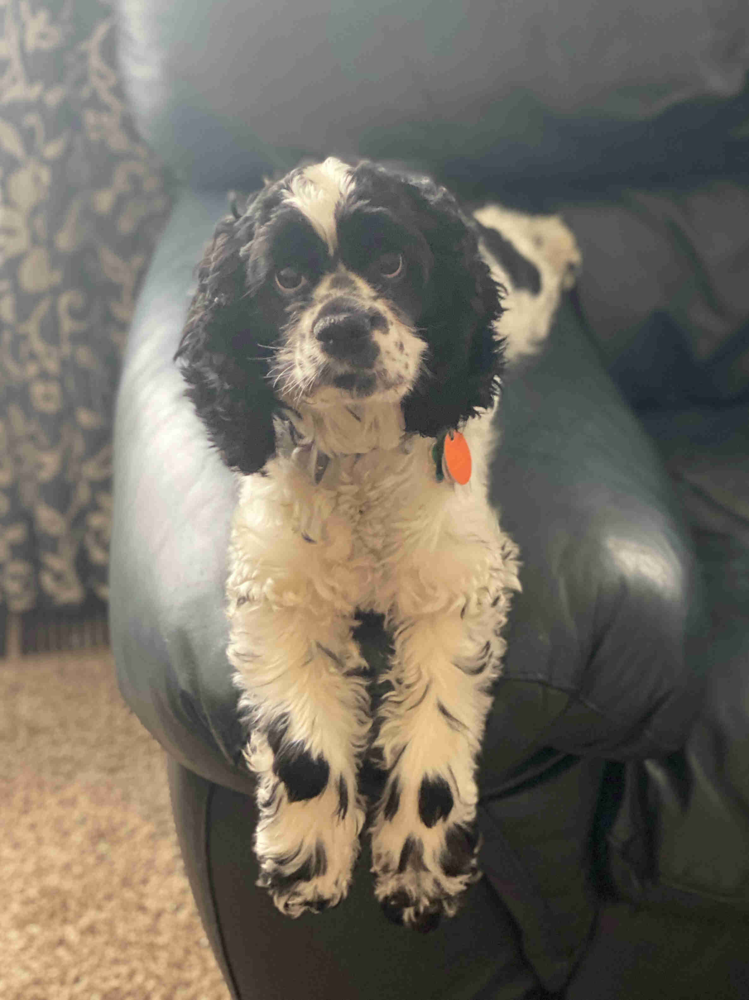

About
At Cuddle a Cocker, our mission is to provide loving homes for Cocker Spaniels while promoting responsible breeding practices. We prioritize the health and happiness of our dogs and strive to create strong bonds between them and their new families. Our commitment to ethical breeding ensures that our puppies are well-socialized, healthy, and have a good foundation for training. We believe every dog deserves a happy and fulfilling life and are dedicated to helping families find their perfect furry companion.
Back in 2016 we were looking to add a dog to our family. After months of research we settled on Cocker Spaniels as our breed of choice. We wanted a dog that would be good with our two young boys, be rugged enough to keep up with our weekend activities, and one that could also be trusted in the house while we were at work.
Cocker Spaniels are the smallest of the sporting group. They are great with kids and other animals. They are also quite intelligent and are thus easily trained, and they have a low shed coat.
Our Dogs
Introducing the future of West Denver / Cuddle a Cocker - MAGGIE!!
'Waggy' Maggie McDog aka "the masked bandit"
We got Maggie in the spring of 2022. She is packed full of energy. The 'Mag Wagon' is like a burst of sunshine, she is always 'smiling' and excited to see us.
Maggie is registered with the American Kennel Club (AKC).
Sadie 'The Lady' McDog
Sadie was our first family dog. She is such a sweetheart! She is so gentle with the children, even when they play rough with her.
Sadie is registered with America's Pet Registry (APRI) and is a pure bred Cocker Spaniel.
Sadly, Sadie was getting too old to safely continue having litters so we had Sadie fixed in April of 2022. She continues to be our loyal companion.
Ringo 'Chaz' McKnuclkes
We got Ringo as a companion for Sadie. He is a bit of a knuckle head, but he is also a very sweet boy.
Ringo is an immeasurable source of cuteness. He will hypnotize you with his good looks, charm, and 'kissin' lips'.
Ringo is registered with the American Kennel Club (AKC). He comes from a line of championship winning Cocker Spaniels.
We had to get Ringo fixed in 2022 as he had formed a habbit of marking the inside of our home.
We have had both Sadie, Ringo and Maggie DNA tested. All are 100% Cocker Spaniel and don't have any known genetic predispositions.
Unofficial pedigrees are available upon request.
Puppies
We don't currently have any puppies available, however we are expecting a litter towards the end of February with puppies becoming available mid April.
Contact
Location:
Morrison, CO
Email:
tcorameyer@gmail.com
Call/Text:
+1 720 903 0663